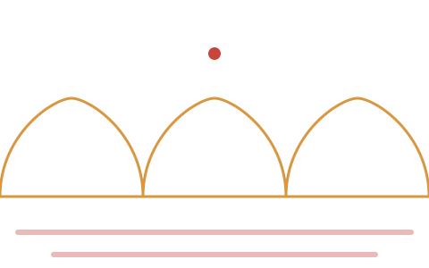

Cybercrime and cyber threats
[Short description of the project, data sources and method used.]
[Short description]
Project
Security analyst · quantitative methods, data science and OSINT
I hold a BA in International Relations from El Colegio de México, with a foundation in statistics and R. I analyze security problems with quantitative methods, data science and open-source intelligence to understand, manage and reduce risk. I am building my path toward data science and aim to support risk and intelligence consultancies.
I analyze security problems with quantitative methods, data science and OSINT to understand, manage and reduce risk.

[Short description of the project, data sources and method used.]
[Short description]
Project
[Article title], [Journal], [Year]. Read article
[Article title], [Journal], [Year]
Publication
New analyses with data and code, published here as they are completed.
In progress
In progress
Analysis, reproducible workflows and scripting.
Inference, modeling and prediction.
Grouping numerical and categorical data.
Clear charts and maps for decision-makers.
Relationships among actors and events.
Open-source collection and verification.
Open to conversations with risk and intelligence consultancies.